Week 12 · Multivariate statistics and machine learning
Graduate Pharmaceutical Studies
Multivariate statistics & machine learning
Week 12 · final lecture
How do we reason when many variables act simultaneously?
Imagine 200 patients × 2,500 metabolites
LC–MS · hypothetical metabolomics study
Rows: 200 patientsMild cognitive impairment at baseline; prospective follow-up.
Columns: 2,500 metabolitesMass-spectrometry signals, intensities and derived features.
Outcome: progressionCould a metabolic fingerprint help predict Alzheimer’s progression over 3 years?
The dimensionality is in the variables
High dimension ≠ extra physical dimensions
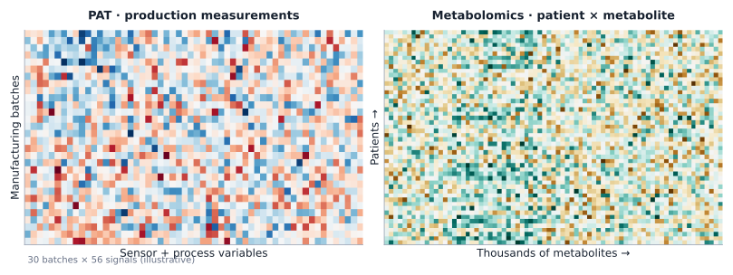
Every column is an distinct measurement type/variable (but might be statistically correlated); every row is a sampled observational unit.
Process analytical technology: why we care
Industrial pharmaceutical applications
Raw material fingerprintsComposition, supplier and batch variability.
Process conditionsTemperature, pressure, flow, particle size, spectroscopy.
Quality predictionPotentially detect emerging deviations before a batch is lost.
Too many measurements for a single-variable scatter plot.
Two different statistical paradigms
Until Last Week
Statistical Estimation & ModelingGoal: Explain mechanisms & test hypotheses.Inference, parameters, confidence intervals, and interpretability.
This Week
Statistical Learning & PredictionGoal: Predict outcome on unseen data.Focuses on generalization and predictive accuracy, often trading off interpretability.
Statistical Learning splits into two primary paradigms:
1: Unsupervised Learning
Structure DiscoveryAnalyze features (\(X\)) without target labels (\(Y\)). How many useful dimensions? Are samples similar? Are there clusters?
PCAUMAPClustering
2: Supervised Learning
Outcome PredictionMap features to labeled targets (\(X \rightarrow Y\)). Can measured features predict a future or unknown outcome?
LDA / PLSDecision TreesNeural Networks
Multivariate distributions
Part II
Multivariate data
We now see what these high dimensional data look like.
The challenge of high-dimensional data
Many variables · few patients
n = 200 patientsHow much independent information can we learn?
p = 2,500 variablesCorrelations, multiple comparisons and overfitting multiply.
Need parsimonious structureDimension reduction, regularization and honest validation.
First, what does a distribution look like?
Two jointly continuous variables
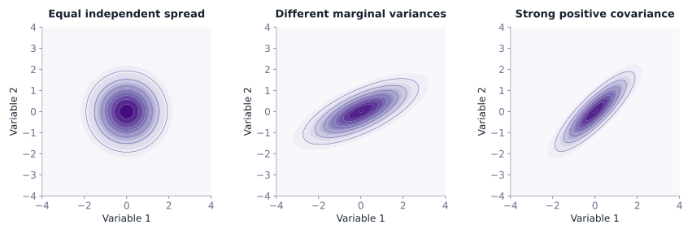
A multivariate Normal distribution has a mean vector and covariance matrix. Covariance controls the orientation of its elliptical contours.
Lab: rotate a multivariate density
Interactive · change spread and correlation
Drag the SVG to rotate the density surface. The two-group mixture is not a single Gaussian.
Top-down view · 200 sampled points and density contours
A mixture is not one Gaussian
The difference matters for interpretation
Single multivariate NormalOne mode with covariance-defined elliptical contours.
Gaussian mixtureTwo or more latent subpopulations create a weighted combination of densities.
Beware hidden groupsA large overall covariance can be produced by mixing dissimilar populations.
What can pair plots still show?
Diagonal = distribution · below = association · above = coefficient
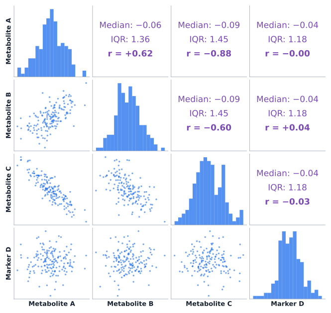
Pairs plots remain useful for a modest number of variables; with 2,500 columns there are over three million distinct variable pairs.
Curse of dimensionality
Distance and density become harder to interpret
Distances may concentrateNearest and farthest points become harder to distinguish in some high-dimensional settings.
Scaling determines geometryA variable measured in large numerical units may dominate ordinary Euclidean distance.
Assumptions still matterFeature selection, domain knowledge and task-specific metrics remain essential.
Not every “distance” asks the same question
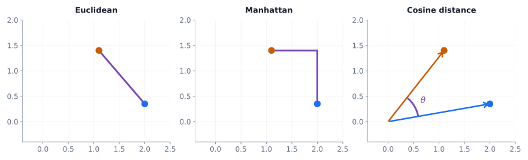
EuclideanStraight-line difference between standardized numerical profiles.
CosineDifference of directions; useful for spectral profile shapes.
Fingerprint overlap: Tanimoto similarity
Binary chemical fingerprints · bits for structural features
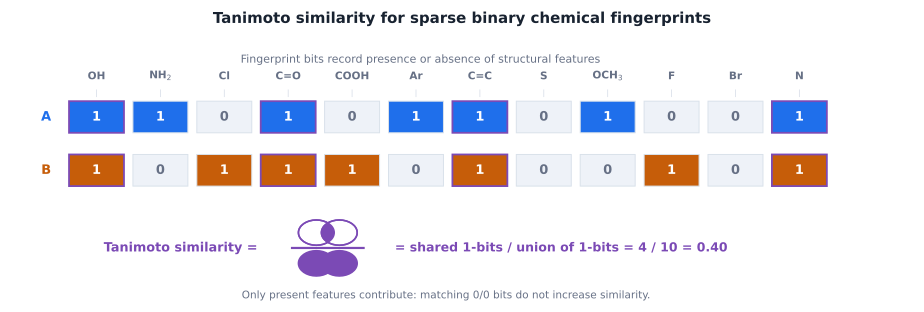
For binary fingerprints, the Tanimoto coefficient equals Jaccard similarity: number of features present in both divided by features present in at least one. Distance is one minus similarity.
Between groups: what does “close” mean?
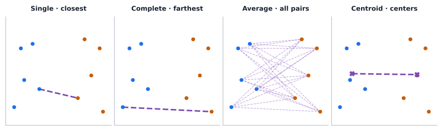
Single, complete, average and centroid linkages answer different questions. They may generate different hierarchical cluster trees.
A covariance-aware distance
Mahalanobis distance
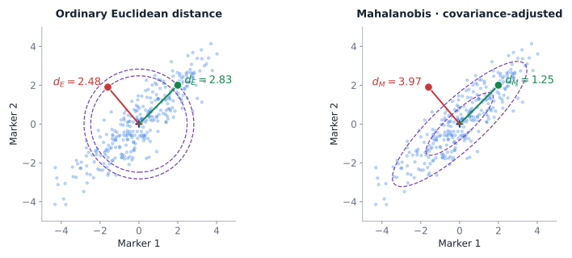
\(d_M(x,\mu)=\sqrt{(x-\mu)^T\Sigma^{-1}(x-\mu)}\)
Different directions in the cloud are not equally surprising. A 2,500-variable covariance matrix cannot be inverted naively with only 200 patients.
A pharmaceutical distance problem
Identity checks · sample against chemical reference standard
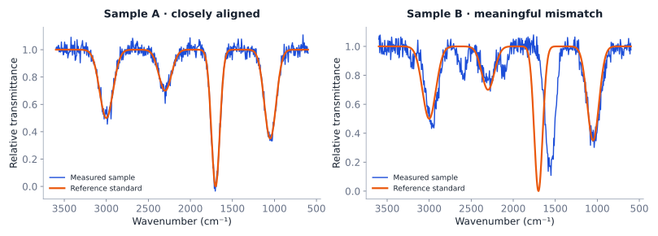
Spectral comparison needs baseline correction, alignment, appropriate scaling, and a similarity criterion. A metric threshold is not automatic proof of identity.
Multivariate tests exist—briefly
Student t testCompares one measured outcome.
Hotelling T²Tests a multivariate mean difference under stronger covariance assumptions.
Our focusPattern recognition and prediction, not a catalogue of advanced multivariate tests.
With more variables than patients, the usual covariance estimate is singular; regularized approaches are needed.
Harold Hotelling
P.C. Mahalanobis
Unsupervised learning
Part III
Unsupervised learning
We now see how we can extract patterns from data.
Before pattern recognition: numerical scales are not neutral
Data preprocessing slide · required for a meaningful multivariate comparison
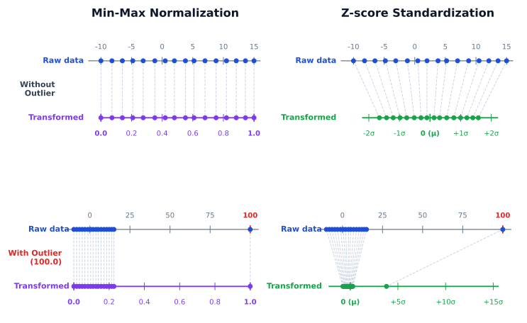
Without scaling, high-variance units often dominate even when they are not scientifically more informative.
Two common scaling approaches
Transformation is not the same as dimension reduction
Min–max normalization\(x^{*}=(x-\min x)/(\max x-\min x)\) · maps observed data range to 0–1.
Z-score standardization\(z=(x-\bar x)/s\) · centers at 0 with SD 1.
PCA: find a new axis system
Principal component analysis · unsupervised
InputsA table of standardized metabolite intensities.
Orthogonal directionsPC1 captures the greatest remaining variance; PC2 is orthogonal and captures the next greatest.
OutputsNew score coordinates for patients + loadings describing each original variable.
PCA is blind to disease labels
Variance ≠ class separation
Wrong objective“Choose the 2D view with the greatest separation between sick and healthy patients” is not PCA’s optimization goal.
Correct objectiveChoose orthogonal directions with maximal retained data variance.
Possible consequenceClass separation can emerge—but it can also hide in a low-variance direction.
Principal components are linear combinations of original variables and might not be interpretable, e.g. \(\mathrm{PC_1} = 0.316 \, \mathrm{weight} + 0.947 \, \mathrm{hemoglobin} - 0.053 \, \mathrm{age}\), and keep in mind the original variables have already been z-score scaled.
Lab: rotate and find principal directions
3D → 2D projection with unknown group labels
Rotate the three-dimensional point cloud. Try to retain maximum spread in your two-dimensional view; then reveal the mathematically optimal PCA plane.
Variance retained in current 2D view—
ViewCustom viewpoint
Synthetic standardized hemoglobin, age and weight. The labels of underlying clouds are deliberately hidden.
InterpretCheck batch effects, biology and external datasets
If PC1 separates instrument batches rather than patients, it may be revealing an unwanted technical artifact.
Explained variance: PCA compresses a dataset by sacrificing some of its variation. The lost variation can still contain clinically relevant information.
Beyond straight-line projections
Neighborhood-based nonlinear dimension reduction
PCALinear projections; emphasizes global variance.
UMAP / related approachesSeek neighborhood structure in a lower-dimensional map; adjustable neighborhood and spacing parameters.
Projection ≠ proofThe exact shape, distances, and apparent clusters depend on method and settings.
Teuvo Kohonen
UMAP Lab: Neighborhoods can reshape a projection
Interactive UMAP illustration
min_dist = 0.25 (fixed). Rotate the 3D mammoth on the left; watch how different UMAP neighborhoods change its 2D representation on the right.
The colors identify corresponding observations. The 2D layout and apparent gaps depend on UMAP settings.
Gaussian mixture is a probability model: estimates mean, covariance and mixture weight for each component.
DBSCAN looks at nearby density: observations within a chosen neighborhood radius and high density grow into clusters; does not require a predefined number of clusters.
Lab: three ways to find clusters
K-means, Gaussian mixture, and density-based clustering
Clusters found—
Noise points—
Clusters are hypotheses, not diagnoses
Technical artifactsBatch, instrument or site effects can masquerade as biological subtypes.
StabilityRepeat on different samples and preprocessing choices.
External validityAsk whether patterns replicate and predict clinically meaningful outcomes.
Supervised learning
Part IV
Supervised learning
We now see how algorithms can learn from data.
Statistical learning: make a useful function
From hand-written rules to fitted models
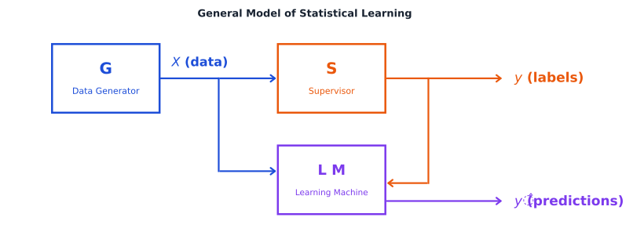
The goal is low expected loss on future observations, not perfect memorization of training measurements.
Three learning paradigms
UnsupervisedInputs X without known labels: PCA, clustering, density models.
SupervisedLabeled pairs (X, Y): classification of disease status or regression of concentration.
ReinforcementSequential actions with feedback and reward; important, but outside this course.
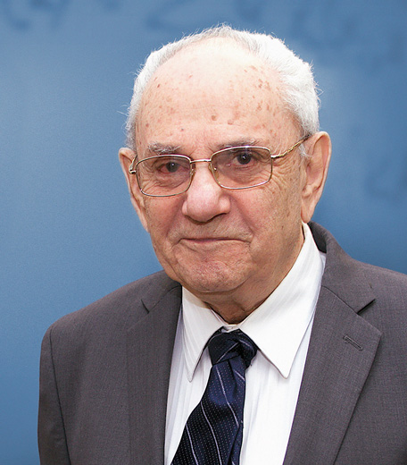
Vladimir Vapnik
Bradley Efron
Robert Tibshirani
What does the model actually learn?
\(\hat f = \arg\min_{f\in\mathcal F}\left\{\frac{1}{n}\sum_{i=1}^n L(y_i,f(x_i)) + \lambda\,\mathrm{penalty}(f)\right\}\)
Empirical lossHow poorly do predictions agree with labeled training outcomes?
Model capacityHow flexible is the family of functions?
RegularizationHow strongly should complexity be restrained?
Keep evaluation honest
TrainingLearn fitted parameters
ValidationChoose settings and features
TestOne final unbiased check on held-out patients
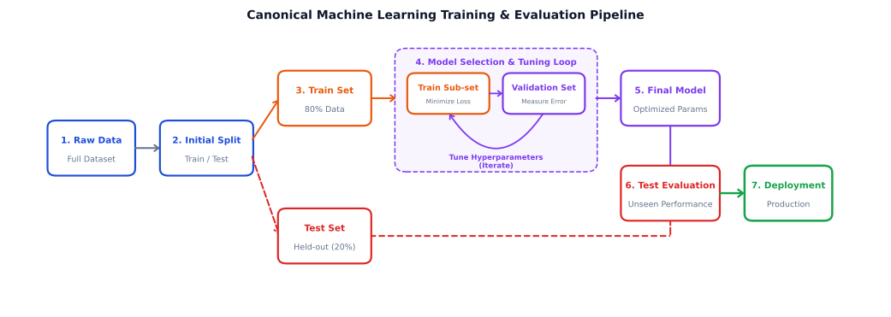
A common pharmaceutical data leak
LeakageScale all 200 patients, use all labels to screen 2,500 metabolites, then split data.
Correct methodSplit first. Fit every learned preprocessing and feature-selection step within training folds.
Even harderRelated patients, repeated visits and shared batches may require grouped splits.
Lab: PCA versus LDA — variance is not discrimination
Same patients · same three biomarkers · different objective
The three visible clouds are not the groups we want to distinguish. Each cloud contains both healthy and sick patients. Compare unsupervised PCA against supervised LDA, or drag to explore the 3D data.
Variance in 2D view—
Visible class separation (Fisher distance)—
View: Custom view. Classes are synthetic, assigned using the low-variance PC3 direction; they are not diagnoses. PCA ignores labels. LDA uses labels to separate classes.
With two classes, LDA has exactly one discriminant direction (LD1). The vertical PC1* direction in the LDA view is only a perpendicular companion axis for visualization, not a second discriminant.
Decision trees turn thresholds into rules
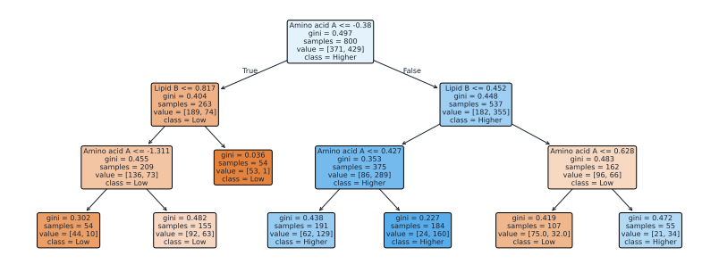
Each internal node chooses a feature and threshold that reduces an impurity criterion, such as Gini impurity or entropy. Terminal nodes predict class proportions.
Lab: walk down a trained decision tree
Synthetic three-biomarker model · changing inputs changes the path
Choose three standardized biomarker values. Press Predict to follow the decision rules from the root to one of seven leaves.
Predicted class—
Higher-risk probability—
Rules used—
Illustrative classification tree trained on synthetic observations. Leaf percentages are training-set class proportions, not calibrated clinical probabilities.
Set values and press Predict.
A tree can memorize noise
The price of highly specific splitting
Shallow treeInterpretable, but may miss real patterns.
Fully grown treeMay fit incidental noise and batch artifacts.
Pruned treeLimit depth/leaf size and validate on new observations.
Leo Breiman
Random Forest: agreement across trees
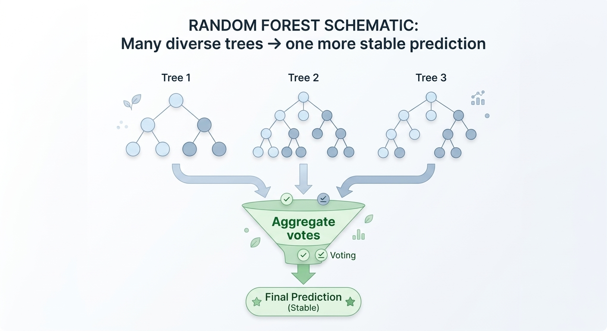
Train many diverse trees on bootstrap samples and subsets of predictors, then aggregate their predictions. A forest often has lower variance than a single unstable tree.
Memorization versus generalization
The central machine-learning problem
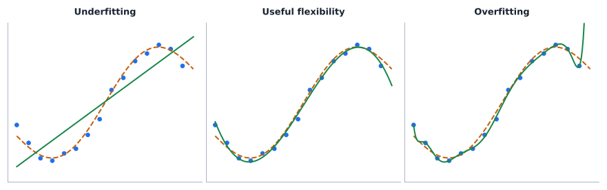
A flexible model can fit all observed points while performing poorly on new measurements. Training error alone cannot detect that.
Bias–variance is a balance
High bias · low flexibilityMisses the real trend: underfitting.
High variance · high flexibilityLearns specific sample fluctuations: overfitting.
Lower future riskAppropriate complexity, representative data and regularization.
Arthur Samuel
John McCarthy
Lab: polynomial complexity and double descent
A constructed, reproducible minimum-norm Legendre example
Train MSE—
Validation MSE—
14 training points; 120 independent validation points (20 displayed). Blue and purple vertical segments show residuals. Signal: cubic + oscillation + Gaussian noise. Minimum-norm Legendre fits can interpolate from degree 13. The two examples are deliberately selected; second descent is not guaranteed.
Why can loss fall again?
Near interpolationModel may become numerically unstable: a validation-error peak.
Overparameterized sideInfinitely many interpolating functions can exist; the fitting rule selects one.
Implicit regularizationThe minimum-norm solution may generalize better in some settings.
Double descent does not replace the bias–variance idea, and adding parameters does not reliably improve future predictions.
How do neural networks use predictors?
From regression to multilayer flexible mappings
A network is a composition of small functions
The nonlinear activations matter
Input layerFeatures: metabolite abundance, age, treatment and so on.
Hidden layersMany neurons with learned weights and nonlinear transformations.
Output layerClass logits/probabilities or a continuous prediction, depending on task.
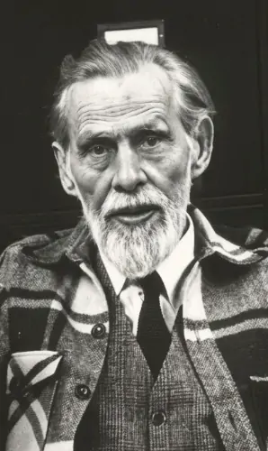
Warren S. McCulloch
Walter Pitts
Frank Rosenblatt
Animation: feedforward neural network
What makes a neural net flexible?
Weights and biasesParameters learned from labeled data.
Depth and widthHyperparameters determining capacity and possible function shapes.
Activation functionsNonlinearity enables curved and discontinuous-like decision boundaries.
Capacity ≠ validityA large model can learn artifacts as easily as meaningful signals.
Training uses a loss function
Classification · compare truth and predicted probabilities
Forward passCompute predictions under current weights.
LossQuantify prediction error on labeled examples.
Weight updateChange parameters to reduce the training objective.
David Rumelhart
John Hopfield
Animation: backpropagation
The famous handwritten-digit task
Lab: draw a digit · run the real network
Works fully offline · browser inference using bundled weights
Use mouse / finger to draw one digit
Resized 28 × 28 input
Shows actual input pixels passed to the model.
Draw a digit
Demo only. Trained on an 8×8 handwritten-digits dataset, resampled to 28×28—not on MNIST. Test-set accuracy on that source does not guarantee comparable accuracy on hand-drawn inputs.
What can an impressive digit demo prove?
It can proveA trained model can use learned pixel patterns for offline predictions.
It cannot proveThat a medical model generalizes to unseen hospitals, instruments, patients or disease prevalences.
For real pharmacy useRequire clinical endpoints, calibrated uncertainty, validation and regulatory considerations.